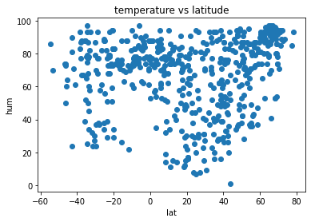
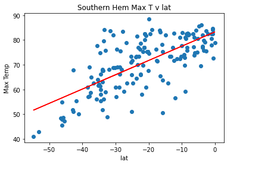

About Me
Jim T: BSChE, MS Applied Statistics
CSSBB
External Links

This site examines Temperature data for global locations based that were queried based on humidity, temperature and cloud index and wind speed.
The purpose of the analysis was to select specific cities meeting the criteria, then analyze the weather data and create visual outputs.
The analysis uses Matplotlib to create various plots of weather for the selected cities and in some plots best fit lines were attempted.
as well as a comparison of the northern versus southern hemisphere.
Analysis Deep Dive Examples



Click on image to open in its own page.